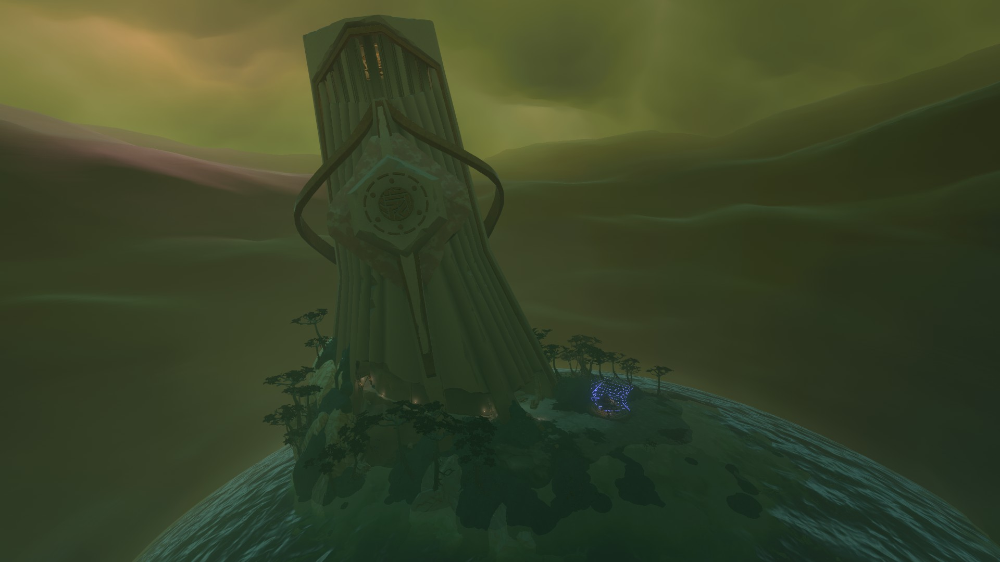
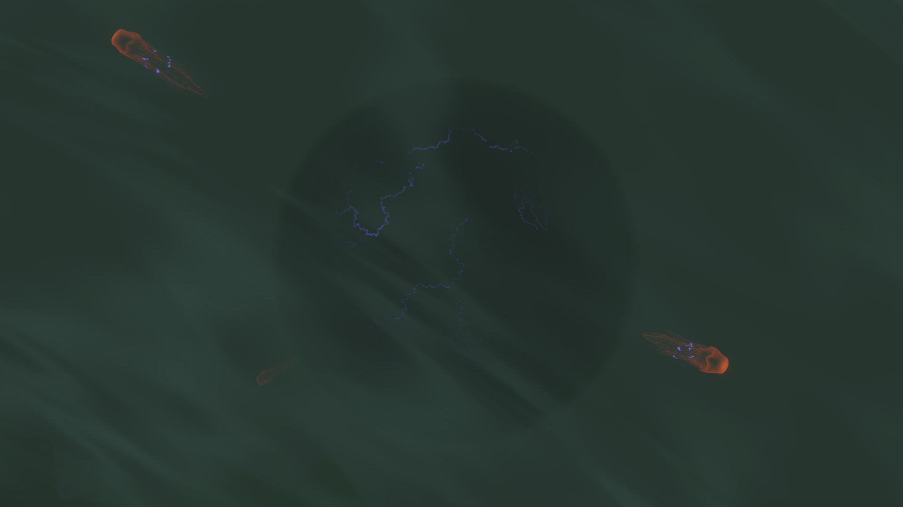
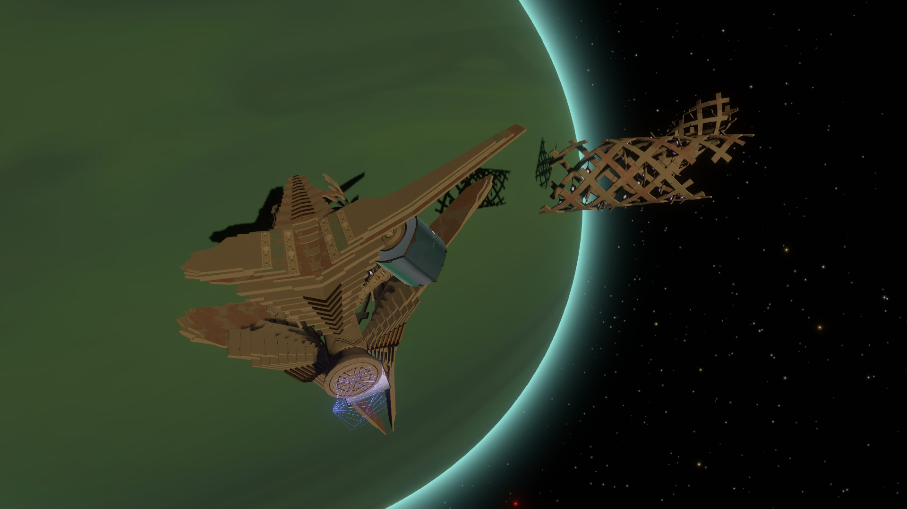

Giant's Deep, the second farthest planet from the sun, is an ocean planet with a thick gaseous outer layer. It contains five small islands on its surface and is constantly filled with heavy weather. Large cyclones frequently form and travel along the planet's surface, and a massive cyclone surrounds its north pole. The planet's core is protected by an electric barrier, which is also protected by a strong current. Giant's Deep is also the planet with the strongest gravity, with it being two times stronger than Timber Hearth's gravity.
NATURAL PHENOMENA
Large cyclones form and travel around Giant's Deep's surface. When one of the cyclones comes into contact with an island, it will shoot the island flying out into space. After a few moments, the island will fall back into Giant's Deep.
PLACES OF INTEREST
Statue Island
Statue Island is an island that the Nomai used to create Nomai Statues, much like the one in Timber Hearth's Observatory. The Statue Workshop's front door is broken, but no other entrances can be found by taking the gravity crystal side path. Taking the side route leads to a small area with a warp receiver and a few ruined Nomai buildings, one of which has a grated floor showing the inside of the Statue Workshop. Nomai writing can be found nearby where the young Lami, Laevie, and Taget discuss wanting to see the test for the memory statues in the workshop. Lami mentions going to see the test by sneaking in through the "other way" rather than the front door.
Gabbro's Island
Gabbro's island is one of Giant's Deep's many island, but is the one with the least things to see, only featuring some trees and a pathway in the mountain covered in ghost matter. Gabbro, a friendly Hearthian astronaut, can be found resting on a hammock playing their flute. Gabbro has a very casual, laidback attitute and is a competent and clever astronaut. After talking to them for a bit, it is revealed that they also got stuck in a time loop just like the player by looking at one of the Nomai statues at the Statue Workshop. The player can also talk to Gabbro about what places they should be looking for on Giant's Deep and what interesting things they have found. When asked how they remain calm in the face of repeated impending death, they teach the player how to meditate, which can be used to end the current loop.
Bramble Island
Bramble Island is an island containing a massive chunk of ice surrounded by enormous twisting vines, resembling the kind from Dark Bramble. A few jellyfish can be seen frozen inside one of the ice chunks. The hollow vine leading to the central part of Bramble Island is covered in ghost matter and takes some careful manuvering to get through. Once inside, the player can find an extinguished campfire with a few supplies nearby and a voice log from Feldspar, detailing their excitement about having reached Giant's Deep's core and their plans to travel to Dark Bramble Next.
Construction Yard
The Construction Yard is a massive Nomai structure consisting of multiple connected ringed walkways equipped with gravity panels. This is where the Nomai built the Orbital Probe Cannon. There are view diagrams and blueprints showing the design of the Oribital Probe Cannon. A Nomai scroll can be found nearby, showing a discussion between the Nomai who worked on the cannon, congratulating everyone on its completion and announcing that it is ready to be sent into orbit for assembly. Another piece of Nomai writing can be found where Cassava breaks the news that the cannon won't be asked to fire due to a problem with the proposed power source. Another piece of Nomai writing details Cassava informing other Nomai about a discovery where one of the Orbital Probe Cannon components had sunk beneath Giant's Deep's current, which was previously thought to be impossible.
Tower of Quantum Trials

The Tower of Quantum Trials, located inside the massive cyclone surrounding the north pole, is one of two towers made to give crucial information to Nomai making the pilgrimage to the Quantum Moon. Inside is a series of trials teaching the rule of quantum imaging: the rule that observing an image of an object is equivalent to observing the object itself. Each trial requires the player to use their scout's camera function to move on to the next. The final room in the tower contains congratulations and a reminder that the other Quantum Shards have their own lessons to teach.
Ocean Depths

The Ocean Depths are the section of the planet's ocean between the ocean's current and the planet's core. The Depths are inhabited by giant jellyfish that are immune to the powerful electrical currents surrounding the core. The electric barrier prevents the player from reaching the planet's core, and touching either the barrier or a Jellyfish's tentacles will cause a powerful shock.
Orbital Probe Cannon

The Orbital Probe Cannon is a large Nomai satellite found in orbit around Giant's Deep, designed to launch a probe from orbit at great speed. The Cannon fires at the beginning of every loop in a random direction and breaks apart, but its ruins and most of its modules still remain in orbit around Giant Deep. The Control Module remains intact and contains information about the cause of the cannon's destruction. The Launch Module remains in orbit with the cannon, but is badly damaged and cannot be accesed through the intended entrace. The Probe Tracking Module is missing, having broken off after the cannon's destruction.